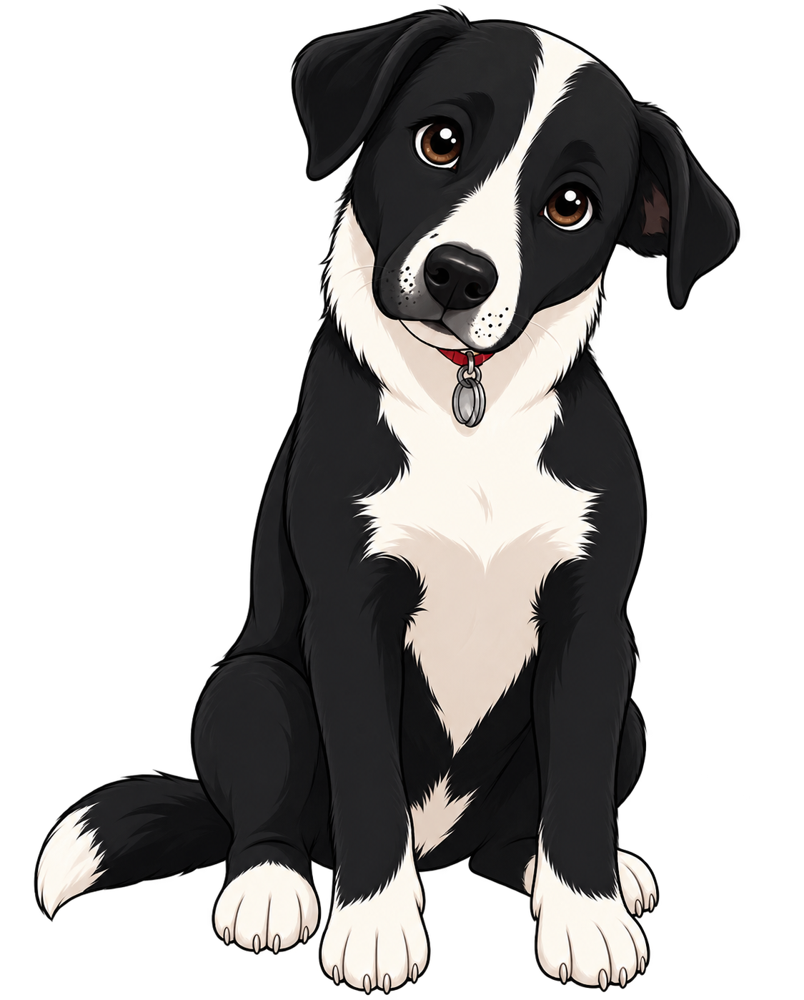

VIDEOJUEGO EDUCATIVO
ZOOTÓPOLIS
Cuidar, Curar y Proteger
Zootópolis es un videojuego educativo donde el jugador asume el papel de un veterinario encargado de rescatar animales heridos, curarlos y encontrarles un nuevo hogar.
Cada misión ayuda a crear conciencia sobre el respeto, el cuidado y la protección de los animales.
Conocer el juego
Rescata
Encuentra animales que necesitan ayuda y llévalos a la clínica.
Recupera
Ayúdalos durante su recuperación y dales una segunda oportunidad.
Adopta
Encuentra familias responsables para que cada animal tenga un hogar.